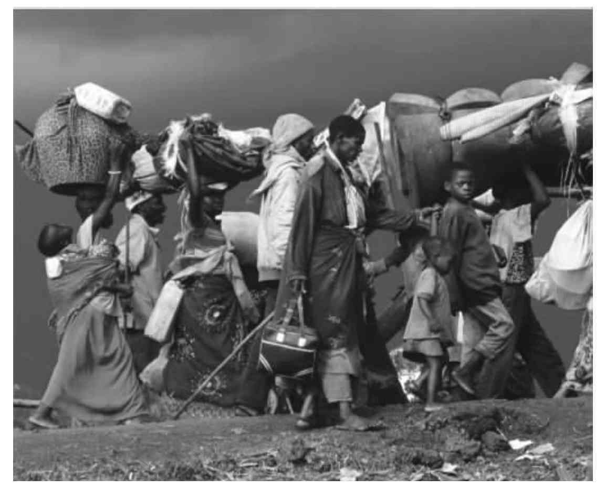
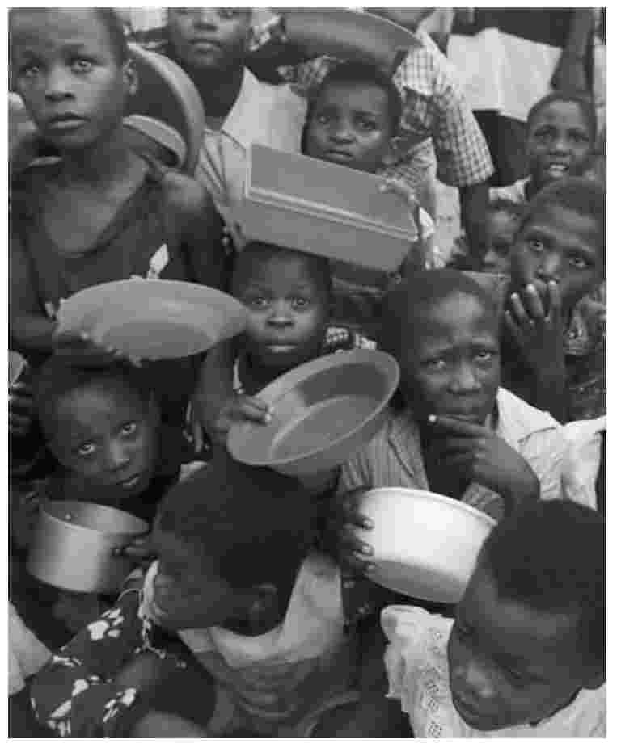
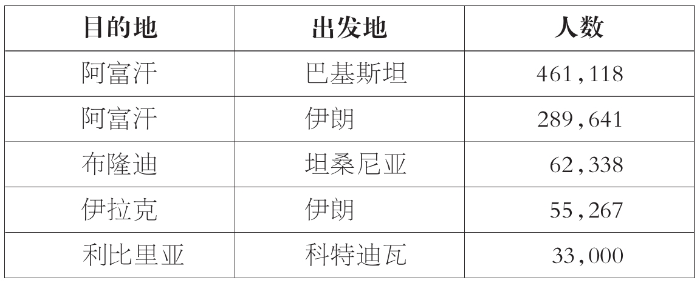
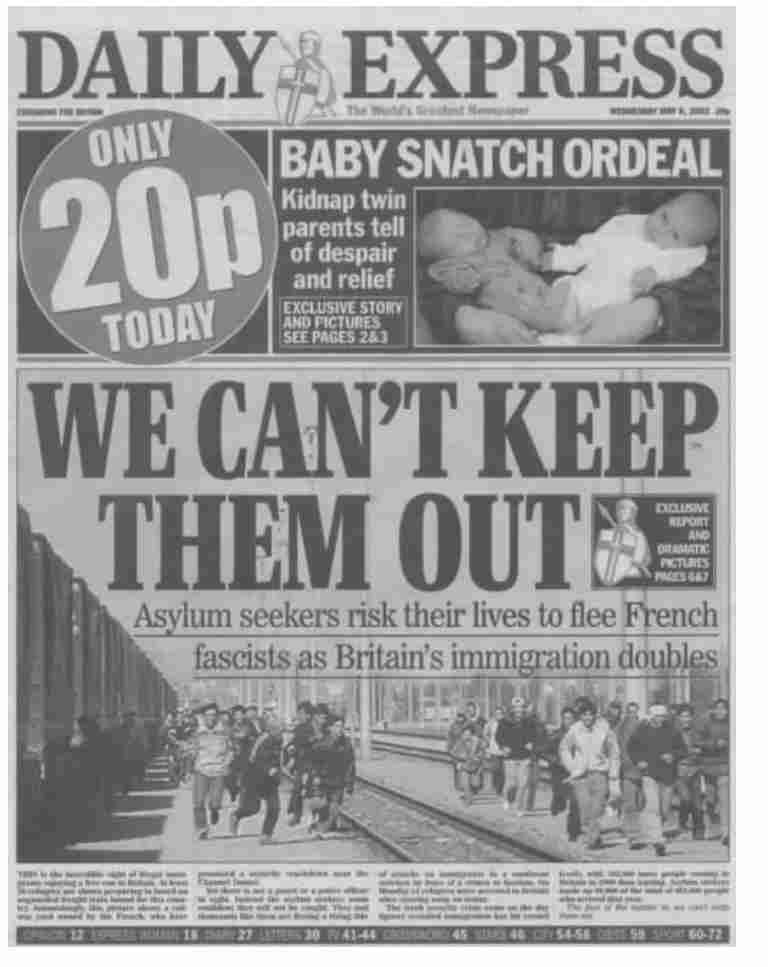
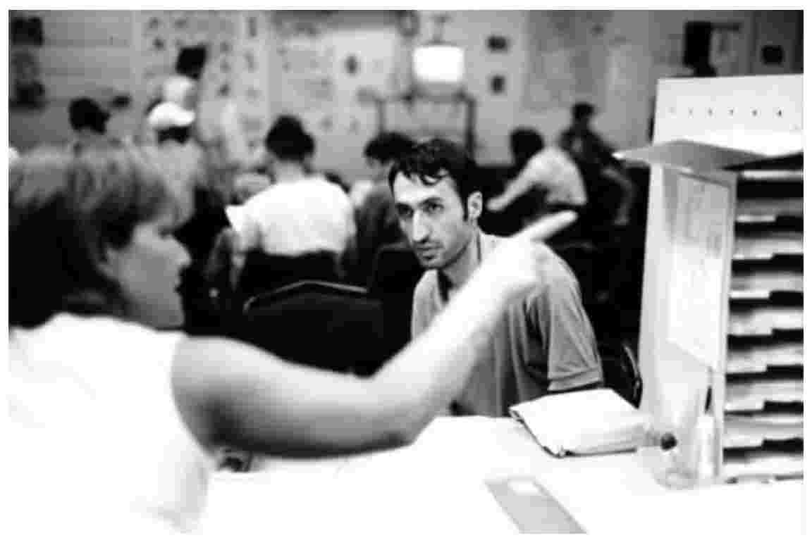
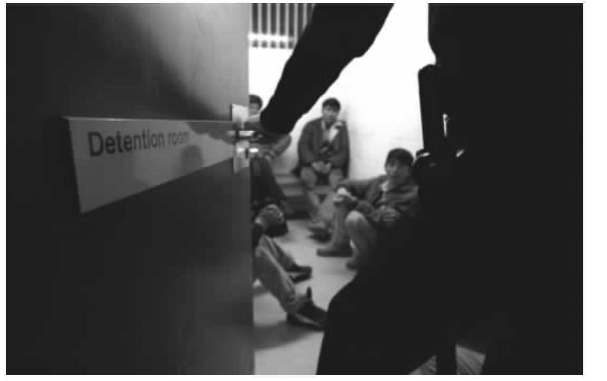

寻求庇护者是指那些申请了国际保护的人。一旦到达他们想要向其寻求保护的国家，大部分移民都会提出申请，尽管不在那些国家境内也有可能申得庇护，如在大使馆或是领事馆。寻求庇护者所提申请的判定依据1951年在联合国会议上通过的《关于难民地位的公约》中的标准，以下将对此进行详细讨论。成功的申请者会获得难民地位而成为难民。申请未成的一般还可以上诉，如上诉仍然未果则需离境。在欧洲及北美也有一系列别的地位，统称特许居留（ELR），授予那些虽非难民但却仍然无法返回家乡的人。
国际难民体系
国际难民体系由一系列的法律构成，其中对难民的概念做了界定并确定了难民的权利和义务，以及各国应当遵守的一系列规范（尽管未必具有法律约束）。该体系的执行和监督由若干机构负责。
关键性的法律公约当属1951年在联合国会议上通过的《关于难民地位的公约》（以下简称《1951年公约》）。该公约将难民定义为“因种族、宗教、国籍、特定社会团体成员或政治主张，确有担心遭受迫害的充分理由而流落于本国之外的人”。尽管针对非洲和拉丁美洲的具体情况，该定义可以略作调整，但基本上仍是全球通用。
该定义有不少方面都引起了很大争议。首先值得注意的是该公约的日期——写成于五十多年前。许多批评家认为，尽管公约中对难民所下的定义在当时足以说明问题，但它无法说明现代世界中难民的现实问题。比如，该公约将注意力集中在国家迫害这个问题上，因为其编写初衷主要是为了保护那些遭受纳粹政权迫害的人。当用来特指那些逃离的人时，该定义在冷战期间还具有了某种政治意图。但在当今世界，我们将看到，难民所要避开的往往是冲突所造成的整体的不安全状况，而不是具体的政治迫害。
此外，该公约并未明确涵盖那些因性别或性取向而遭受迫害的人。我们只需看看阿富汗塔利班政权下女性和同性恋的遭遇就能明白这在今天是多么重要。该公约也没能涵盖因广泛的环境原因（比如海啸或地震）而逃离家园的人。不过有一种观点倒也不无道理，即此类避险往往由政治失败引起，比如未能预报险情、缓解灾害影响、就灾害的影响提供保险，或是未能在善后事宜中提供足够的住所和保护，因此这类避险的人也应被概括在难民的定义之下。
第三种评述是，该定义只适用于那些在本国境外的人。离开家乡却未能离境出国的人要多得多，他们一般被称为“国内流离失所者”（IDP）。“国内流离失所者”比难民更容易遭受伤害，因为他们甚至没有离境出国的能力以免受迫害，而且国际体系还无法像对待难民那样向他们提供保护。我们会在最后一章看到，“国内流离失所者”近些年来已经引起了国际社会越来越多的关注。
尽管有这样的保留意见，有些评论家还是认为应当维护《1951年公约》。首先，它的确还是涵盖了大部分不在本国及需要保护的人，被漏掉的相对来说并没有多少。其次，专门负责该公约执行情况的联合国难民事务高级专员公署在实际当中确实也对移民的定义做了扩展，以涵盖那些虽被排除在外却仍然亟需保护的人，尽可能将“国内流离失所者”以及逃离自然灾害的人包括在内。最后，全球约一百四十五个国家都已签署了该公约，多数人认为要让这么多国家重签修订版或新公约实在不大可能。
一系列的规范也限定了各国对难民的反应。这些规范取自《1951年公约》或其他法律文件（如1948年的《世界人权宣言》），要么具有法律效力，要么就是虽不具有法律效力但却是广为采用的习惯法或协议。其中最重要的几条分别是：有权离开本国，有权入境他国，提供庇护应为非政治行为，不得强制遣返难民，所有经济和社会权利均应惠及难民，各国须尽力为难民提供持续的解决方案。同样，难民也有应尽的义务，最基本的就是要遵守庇护国的法律。
联合国难民事务高级专员公署负责《1951年公约》的维护、执行和监督。吉尔·洛希尔所著的《联合国难民事务高级专员公署与全球政治》一书就联合国难民事务高级专员公署和国际难民体系的发展状况给出了一个引人入胜的概况。他描述了1951年时候的情况。当时格里特·扬·范赫芬·胡德哈特被任命为第一任联合国难民事务高级专员，他“看到三个空荡荡的房间和一个秘书”，得到的授权也不过三年，手头几乎没什么经费。2005年情况就大为改观，安东尼奥·古特雷斯被任命为第十任高级专员，旗下的年度经费就有十亿美元左右，职员约有六千，其得到的授权可使联合国难民事务高级专员公署成为世界上最重要的人道主义组织。
今天，联合国难民事务高级专员公署遭受着经费危机的困扰。与联合国其他机构不同，它从联合国总经费里只能取得最低限度的配额，但却被期望提高年度预算。它已经越来越多地依赖几个主要的捐助者，最突出的是美国、欧洲委员会、瑞典、日本、荷兰及英国。联合国难民事务高级专员公署的经费危机因为该机构将其活动从难民扩大到其他一些需要关注的人群之上而雪上加霜。
联合国体系之外的国际移民组织在国际难民体系中也是一个重要机构。它主要负责后勤，尤其是难民运输。联合国难民事务高级专员公署和国际难民组织所作的努力也得到了很多非政府组织的支持，这些组织往往直接负责营地管理、食品分发、医疗和教育等方面的工作。
难民的全球地理分布
国际难民体系生效以来，难民的全球地理分布已经发生了巨大变化。前面已经提到过，最初的挑战是为那些逃离德国和欧洲被占区以求免遭纳粹迫害的人们寻求解决方案。他们当中很多人最终在美国重新定居。按照最初的设想，联合国难民事务高级专员公署和《1951年公约》是只在一段时期内发挥作用，最初的活动一旦告成便随即终止。然而事与愿违。到了二十世纪六十年代，主要是由于非殖民化的影响，非洲出现了几次大的难民浪潮。我们将在下文看到，这类难民中有不少人都永久定居在了非洲邻国。二十世纪七十年代，由于1971年孟加拉国的建立以及越南和印度支那其他地区的战争，难民大军的地理焦点又一次发生了变化，迁移到了南亚和东南亚。其中一些难民最终在欧洲重新定居。二十世纪八十年代，中美洲很快成为主要的地理焦点。
二十世纪九十年代不同寻常的是，发展中地区和发达地区都同样产生了移民。二十世纪九十年代几次移民洪流同时产生于波斯尼亚地区、科索沃地区、前苏联、非洲之角地区、卢旺达、伊拉克、阿富汗和东帝汶。同时，几次大的移民回流发生在莫桑比克和纳米比亚，到二十世纪九十年代末期，阿富汗和波斯尼亚地区也发生了这种情况。此外，数量甚巨的难民首次开始离开自己的地区到发达地区去寻求庇护。二战结束时，起初主要是欧洲问题的难民流动已经成为真正意义上的全球现象，情况也极其复杂。
据联合国难民事务高级专员公署的估计，2005年底全球约有难民八百四十万。这是二十五年间所报道的最小数字，与1990年超过一千七百万的数字形成鲜明对比。原因之一就是近年来数量可观的难民纷纷重返故里；还有就是，全球一些大的冲突已经趋缓，新难民也就越来越少。前面已经解释过，联合国难民事务高级专员公署也将其援助施及那些未被官方认定为难民的人，而他们的数量在2005年又增加了一千一百万。其中包括约六十七万寻求庇护者、二百四十万无公民权者、一百一十万刚刚返乡的难民、约三万已在新国家重新定居的难民，还有六百六十万“国内流离失所者”。值得注意的是，上述“国内流离失所者”算的只是接受联合国难民事务高级专员公署援助的那些人，而根据有些估计，当今全球“国内流离失所者”多达两千四百万。
最大的单一难民人口来自阿富汗：2005年有将近两百万阿富汗难民，主要是分布在伊朗和巴基斯坦这两个邻国。紧随阿富汗之后，最重要的难民来源国还有苏丹、布隆迪、刚果民主共和国和索马里，这些国家的难民绝大多数都居住在其邻国。接受过联合国难民事务高级专员公署援助的“国内流离失所者”的数量以苏丹为最，达两百万左右，而该国“国内流离失所者”的总数则接近六百万。计入统计数字的无公民权者大多是巴勒斯坦人。人数最多的返乡也是在阿富汗——2005年约有七十五万人返回阿富汗。2005年法国收到的庇护申请最多，约五万个，其次是美国（四万八千）和英国（三万零五百）。重新定居在美国的难民最多，约五万四千人，其次是澳大利亚（一万一千七百）和加拿大（一万零四百）。
就当代全球难民的地理分布情况应有不少评述。尽管最大的难民人口是生活在伊朗和巴基斯坦的阿富汗人，但受难民影响最深的大陆无疑当属非洲。非洲的难民输出国与输入国是最多的。尽管比起以前，长途迁徙的难民数量见长（比如很多居于法国和英国的寻求庇护者都是从撒哈拉沙漠以南的非洲远道而来），但大多数难民还是短途迁徙去邻国避难。最后，尽管根据所做观察，比起过去的二十五年，今天的难民人数的确是减少了，人们也有理由因此而感到乐观，但也应该看到，承受巨大负担的还是那些全球最穷困的地区。
难民活动的原因
《1951年公约》对难民所下的定义在解释难民为何逃离家园时强调的是迫害的概念。当今世界无疑仍然有一些肆意迫害自己某些国民的政权。不过，似乎当今大部分难民之所以离开家园是为了躲避冲突而不是国家的直接迫害。难民活动方面杰出的理论家阿里斯蒂德·佐伯格说，难民是在“躲避暴力”，而并不一定是迫害。之所以仍然把他们定义为难民是因为，就算他们的国家并未对他们进行直接迫害，却也未能保护他们，未能使他们享有公民应普遍享有的权利。

图8 行进中的卢旺达难民
尽管此处不应对现代战争繁浩的文献做什么回顾，但因其与难民活动不无关联，所以还是有必要列出由颇具影响的学者玛丽·卡尔多所描述的使“新战争”有别于以往冲突的一些特征。首先，跟大多数人一提到战争时所产生的想法大相径庭的是，当今几乎所有的冲突都是因种族和宗教而起，发生在国家内部，而不是国与国之间。1998年到2000年厄立特里亚和埃塞俄比亚之间的冲突实在算是个罕见的例外。实际上，据估计，2000年全球二十八起武装冲突中有二十五起都是发生在国家内部——尽管发生在阿富汗和伊拉克的以美国为首的军事行动自此打破了这一形势。
其次，战争似乎已经变得“非正式化”或“个体化”了，也就是说，打仗的越发不是什么正规部队了，而是民兵或雇佣军。再次，以往在战争中丧生的主要是战士，而现在却主要是平民。据估计，现代战争当中平民占伤亡人数的比例高达百分之九十，而第一次世界大战中这个数字只有大约百分之二十五。第四，现代冲突日趋持久且会屡屡再发，在非洲尤其如此。原因之一是这些冲突是因种族划分而起，不但和平解决无望而且战火还会重新燃起。另外，复员遣散也往往徒劳无功——大量的武器跟数十万无事可做、百无聊赖且又激进好斗的年轻人合起来简直就是混合炸药。
新战争的最后一个特征就是难民比例加大，原因有三。一是，人口迁移已经成为战争的一个战略目标，有时候交战各方甚至会合作以实现某些人口的重新安置。二十世纪九十年代发生在巴尔干半岛的所谓种族清洗就是佐证。二是，现代武器可以更快地使更多的人受到恐怖威胁（或丧生）。最后，地雷的广泛使用往往也使人们别无选择，只好在冲突中离开家园。
难民活动的后果
有关难民活动后果的学术文献涵盖范围甚广，难民机构的报告也为数可观，从对难民的心理影响、难民营对环境的影响直至难民中艾滋病的传播，无所不包。联合国难民事务高级专员公署的网站（www.unhcr.org）当为查找有关一系列难民问题的最新数据、研究及政策的最佳处所。本节不打算去探求这众多方面的本质所在，而是要把注意力集中在以下三个相互交叉的主题之上：定居的模式与过程、性别以及援助。
难民营业已吸引了不少注意力，而各方意见则各不相同。大多数组织还有一些专家都认为，难民营在保护难民方面至关重要，而且也能提供最大限度的援助和教育。也有人指出：难民营里暴力和性虐待事件频发；难民营使难民之间彼此产生依赖；通过诸如排水或污染地下水以及乱砍滥伐等行为，难民营会对当地环境产生有害影响。某些难民在难民营待过数个保护期，有时候可能会是好些年，难民营也会对他们产生深层的心理影响。
并非所有的难民都居住在难民营，或许这至少部分是因为他们自身的一些问题。在当地人中间“自建居所”的难民也占不小的比例，通常是在边境附近的村落。尽管已经跨越国际边境，但如果难民发现周围都是与自己同一种族的人，他们尤其会这么做，在非洲就经常发生此类情况。居住在城市的难民就更难确认并研究了，据估计，苏丹的喀土穆和埃及的开罗就各有数十万的难民在那里安家。
难民的定居方式似乎综合了难民营、自建居所以及市区住宅这三个选择。有时候难民家庭各有分工，青年男子去城里干活，妻儿老小则待在难民营接受救助。或者，难民全家奔波于几地之间以求尽可能多的获得收入和保障。
持久难民的状况
难民人口中，与男性相比，女性人数有日见增多之势。原因之一是，男性死于战乱或应征入伍的可能性更大，冒险留守家中保卫家园或是继续在那里工作的可能性也更大。尽管如此，只是到不久前，女性难民才引起了学界的关注。最近，有关文献趋向于将几乎所有的注意力都放在女性难民所面临的挑战上。她们可能会在灰心丧气的丈夫或其他男人手里遭受暴力或性虐待，并因之有健康之忧。照料家小的重担过多地落在了她们肩上，在女性持家的家庭里尤其如此。她们还得负责做饭——最显而易见的证明是，女性为了收集柴火要走的路越来越长。
通过给予女性难民特别的关注并强调她们在难民居所中往往最具智慧和进取精神，苏珊·福布斯·马丁的《女性难民》对这两种趋势做出了肯定。人们认为是她的书改变了联合国难民事务高级专员公署处理女性难民问题的方式。现在，只要有可能，食品及其他物品总是会优先考虑直接分配给女性。她们也常常接受培训成为难民居住地的“同伴教育者”。实际上，移民活动常常被看做女性移民（包括难民）获得权力的过程，但也有一种忧虑，即她们一旦重返家园，回到传统的父权社会，权力就会随即丧失。

图9 莫桑比克的儿童难民排队等候食物
围绕难民援助的重要讨论是：是否给难民提供援助？何时提供？如何提供？巴巴拉·哈勒尔-邦德的《强加的援助》无疑是这场讨论中的一部重要论著，在难民研究领域可谓开风气之先。尽管有不少人认为她的案例言过其实，但她还是对难民营的援助体系提出了令人信服而又不留情面的批评。比如，有时援助会变得多余，从而产生依赖；也有一些援助不当的事例，如所提供的食物引起了大多数受援助人口的不满。男性难民未必就是接受援助的最佳人选，因为据了解他们会将援助所得用于其他活动，使家人忍饥挨饿。
长久之计
解决难民问题有三项所谓的长久之计。三者都可能各有不足。
一般认为，最佳方案就是自愿归国，换句话说就是让难民们重返家园。对此首先要说明的就是，要强调“自愿”一词。我们知道，难民保护的核心原则就是“不驱逐”，但违背难民意愿且在难民本国国内尚不安全时将其遣返的事件也时有发生。难民归国的另外一个潜在的难题就是如何界定家园的概念。比如，把难民遣返回本国某个安全的地方，而难民的家乡却依然不安全，这种做法是否合适？联合国难民事务高级专员公署对此予以否定，而越来越多的国家却对此表示赞同。
表6.1 2005年最近几次重大的遣返活动

难民遣返中一个关系重大的未知因素就是难民重返家园后会有怎样的遭遇。根据《1951年公约》的有关规定，难民一旦越界回国就不再受到特殊保护或援助，尽管我们知道联合国难民事务高级专员公署也确实向部分归国的难民提供过援助。这些难民回国后面临的困难不容低估。他们回国后往往找不到工作。当他们在国外避难的时候，他们的家园和土地往往被人占据，甚至毁坏或被埋上了地雷。诸如道路、学校、医院等基础设施通常也遭到了毁坏。他们会受到退伍士兵的骚扰或者那些未曾逃离的人的嫉恨。还有一些人，尤其是女性和儿童，因为不得不接受其在社会中往往不如以前的地位而面临心理挑战。
第二种方案是就地融合，即难民在侨居国永久定居。二十世纪六七十年代，这种方案在非洲尤为普遍。前面已经提到过，难民越境后通常与自己的族群共处。在这个时期他们的人数还相对较少，除此之外，这也意味着就地定居相对而言不成问题。事实上，在坦桑尼亚之类的国家，难民通过在当地的村镇定居促进了当地经济的发展。
在当今的非洲，就地融合已经远不如以前那样普遍，当地的侨居国政府对难民人口越来越敌视。单单难民的数量就足以构成一个原因。另外，越来越明显的是，人们认为难民带来了问题，比如争夺土地和工作机会，还有就是造成环境恶化。非洲以及其他发展中国家希望移民一俟安全便即归国，这种意愿日益强烈。
与之对比鲜明的是，发达国家传统上会授予难民永久居留权。尽管在合法的条件下，人们可能会期望难民在条件允许时重返家园，但实际上几乎所有的难民，比如在欧洲的难民，都会永久居留。在英国，难民获得难民地位七年以后即可申请获得英国国籍。
最后一条长久之计就是在第三国重新定居。在此过程中，往往来自难民营的难民会永久定居于另外一个国家，而且几乎总会是在发达国家。我们了解到，美国、澳大利亚和加拿大所接受的重新定居的难民最多。整个二十世纪七八十年代，难民重新定居在欧洲相当普遍。当时有很多越南的“船民”以及来自皮诺切特统治下的智利的难民到了欧洲。不过，现在重新定居欧洲的配额严重缺乏。比如，2004年仅有一百五十名难民重新定居在英国。问题是，就当前人们对欧洲某些区域的寻求庇护者及难民的关注的形势来看，大规模的重新定居在政治上并不可行。

图10 2002年《每日快报》一张危言耸听的头版
工业化世界的庇护问题
在整个工业化世界，尤其在欧洲，寻求庇护者已成为政治议程上的首要问题，媒体和公众当中，也存在一种山雨欲来的危机感。一方面，可以认为这场危机是夸大其词。另一方面，工业化国家中与庇护相关的一些重大挑战（即便是置之于难民和寻求庇护者的全球大视野中）也需要分别加以关注。
庇护问题在欧洲开始引起越来越多的关注，尤其是在二十世纪九十年代。这是因为当时到达那里的寻求庇护者达到了顶峰——1992年大约有七十万。难民人数又因为逃离波斯尼亚地区战乱、进入西欧的近乎一百万难民而进一步增加。
除了数量，这一时期寻求庇护者的其他一些特征也引起了人们更大的不安。首先，他们（通常以“自发”寻求庇护者来形容）是未经正式许可避难他国的。我们知道，二十世纪七八十年代，欧洲接受了难民重新定居，但是难民的人数、特征以及入境方式是可以由目的地国来控制的。与之相比，寻求庇护者通常只是从遥远的国度到达边境——当时阿富汗、索马里、斯里兰卡都是重要的来源国。其次，与重新定居的难民相比，很多申请庇护的人实际上根本就不是难民。随着二十世纪八十年代移民去欧洲参加工作的合法机会的减少，寻求庇护成为了劳动力移民在欧洲寻找工作的为数不多的几个途径之一。最后，当时普遍的忧虑是，这些人或许由此会成为自“南”向“北”的大批移民的先遣队。

图11 一名寻求庇护者在英国多佛接受采访
主要是为了应对寻求庇护者人数的增长以及其他一些忧虑，欧洲各国引入了大量新政策试图减少寻求庇护者的人数并保证入境者确有资格而并非“假冒”：它们要求许多国家的公民都必须持有签证。航空公司及其他运输单位受命检查所有旅客的护照和签证并对未持有关证件者进行罚款。庇护的程序得到了精简以尽可能快地处理申请。寻求庇护者在享受社会福利方面也受到了限制。
就此类政策的影响所产生的讨论很多。毫无疑问，在欧洲寻求庇护者的数量已经明显减少——2004年，当时欧盟的十五个成员国接到的申请仅二十三万三千份，比1992年报道的数字的一半还要少很多。但是，有些评论家指出，难民人数减少的主要原因是，包括阿富汗、索马里以及斯里兰卡在内的几个主要来源国国内的冲突已经平息。还有些评论家指出，新政策固然减少了寻求庇护者的人数，但他们还是源源不断地入境，只不过是以非常规的方式进行——非常规移民已经开始取代庇护了。
“从申请庇护到实现移民”这一涵义甚广的说法被越来越多地用于描述当今工业化世界所面临的庇护方面的特有挑战。这个说法指的是概念和政策方面的挑战，一方面是区分难民和“假冒”申请人，另一方面是区分寻求庇护者和非常规移民。
英国的情况可以说明这些挑战。在过去十年里，入境英国的寻求庇护者中百分之十到二十的人都被认为符合《1951年公约》的标准并获得了难民地位。还有百分之二十到三十的寻求庇护者不符合公约标准，但因为考虑到他们返回来源国尚不安全，所以这批人被给予了临时性特许居留地位。这意味着介于百分之五十到七十的寻求庇护者未被认定为需要保护。遭到拒绝的人有权提请上诉，有些人上诉之后的确得到了保护。大部分人的上诉遭到拒绝，于是不得不返回来源国。但很多人并不如此，他们非法在英国滞留。

图12 乘坐货运火车到达英国的寻求庇护者被拘留在福克斯通的一间拘留室里
有些遭拒的寻求庇护者，虽然其申请及随后的上诉遭到拒绝却依然留在目的地国，这是庇护与非常规移民混淆难辨的原因之一。还有就是，目前有蛇头的帮助，因此以非常规方式入境的寻求庇护者的比例似乎越来越大。考虑到上一章描述的移民偷渡的种种危险，这种情况应引起庇护支持者及人权组织的高度关注。最后，有些寻求庇护者到达他国后也会触犯法律，通常是因为未获工作许可证即参加工作。
遣返遭拒的寻求庇护者
在这样的情形下，“寻求庇护者”和“非常规移民”二词时常交替使用或许就不足为奇了。问题是这会转移人们的注意力，使他们无视寻求庇护者中不少人真的是为了生命或自由而逃离本国寻求保护的。值得关注的是，难民——有权在国际难民体系下受到保护的人——为了进入工业化世界的庇护体系冒着生命危险，而当他们一旦到了那里却又被视做非常规移民且被当做非常规移民来对待，这种情况越来越多。